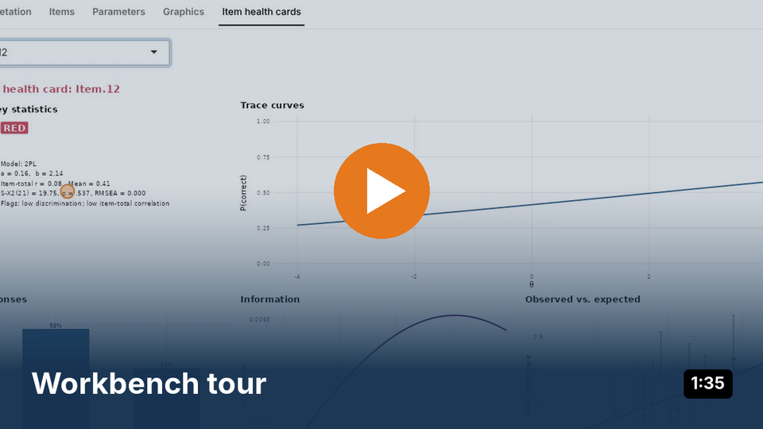
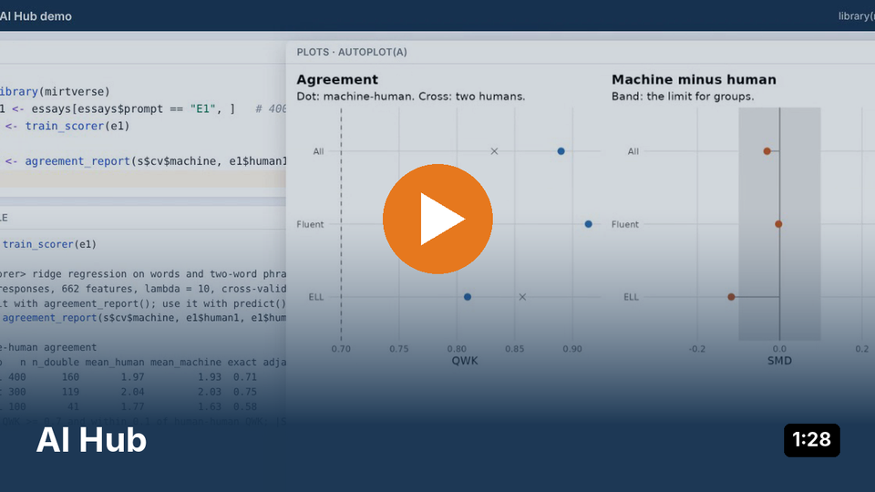
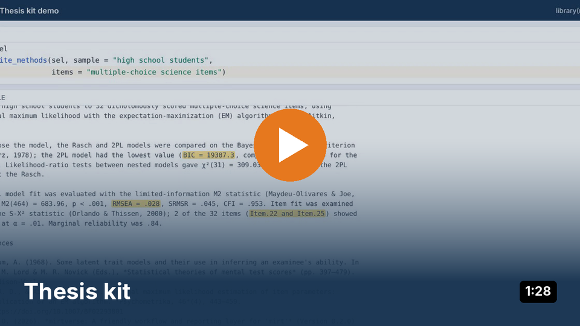

From item responses to defensible decisions, with or without writing R code.
Türkçe: mirtverse’e Türkçe giriş ve Türkçe özet kılavuz (PDF).
mirtverse is a friendly workflow and reporting layer for the mirt package by R. Philip Chalmers. mirt estimates item response theory (IRT) models; mirtverse helps you choose a model, understand the results, make publication-ready figures, and share everything with people who never open R.

Try it without installing anything: Open the live example dashboard or browse the Gallery of figures and outputs.
Or watch a short demo (about 90 seconds each, with captions):
  
Find your way in
| I am… | Start here |
|---|---|
| A student learning IRT or analysing thesis data | Students · Thesis kit |
| An instructor teaching measurement (book, ten labs, sample syllabus) | Instructors · Adopt for your course |
| A psychometrician at a testing or credentialing program | Testing programs · Case study |
| A researcher who already uses mirt, ltm, eRm, TAM or irtQ | Researchers · Moving to mirt |
| New to R, or coming from Winsteps, SPSS or Excel | New to R |
| Curious about AI in measurement | AI Hub: Book chapters, labs and a workshop kit |
Not sure which IRT model fits your data? The Which IRT model? flowchart goes from what one item score looks like to a model and the line of R code that fits it (printable poster).
Get started
install.packages("mirtverse", repos = c("https://okanbulut.r-universe.dev", "https://cloud.r-project.org"))
# Development version: remotes::install_github("okanbulut/mirtverse")
library(mirtverse)
data <- expand.table(LSAT7)
sel <- select_model(data) # compares Rasch, 2PL and 3PL and recommends one
mod <- sel$best # an ordinary mirt model
interpret(mod) # what the results mean, in plain language
item_table(mod) # item statistics, fit and flags in one table
gg_wright(mod) # person-item map
item_card(mod, "Item.2") # one-page item review
mv_report(sel, file = "report.html") # everything in one HTML file
mv_dashboard(mod, title = "LSAT results") # interactive dashboard to sharePrefer clicking? Run launch_workbench(), which writes the R code for you. Every function is listed in the Reference, and the cheat sheet (PDF) groups them by task.
Beyond the usual IRT toolkit
-
Describe the analysis, get the script.
mv_ask("fit a 2PL, check DIF by gender and make a report", data = mydata)writes a tested R script from one sentence, with Claude, an OpenAI model, a local model or an offline parser. How it works -
Let Claude run the analysis. The mirtverse plugin for Claude Code turns Claude into a psychometrician that fits models, checks items and DIF, scores people, explains the results and leaves a report and an R script, all with mirtverse on your own computer:
/plugin marketplace add okanbulut/mirtverse, then/plugin install mirtverse@mirtverse. The mirtverse agent -
Generate items.
generate_items()drafts multiple-choice items with keys and open-ended items with rubrics from a test blueprint, andgenerate_isomorphs()builds item families from an item model. Book chapter -
Score open-ended responses.
train_scorer()trains a transparent scoring engine that runs offline, andscore_open()scores with it or with a language model, checking agreement with human raters before any score is used. Book chapter -
Run a whole testing program.
mv_pipeline()takes a test from blueprint to bank monitoring in 13 stages, with flags that catch problems before the next step. The pipeline · Case study
About mirt
mirt, developed and maintained by Dr. R. Philip Chalmers, is one of the most comprehensive open-source packages for item response theory. It estimates unidimensional and multidimensional models with more than 30 item types, multiple-group and mixed-effects models, and latent class and diagnostic models, with EM and MHRM estimation, fit statistics, DIF and ability estimation.
mirtverse depends on mirt and never changes how models are estimated. Every function accepts a model created with mirt::mirt(), so you can move between the two packages at any point.
Citation
Please cite mirtverse together with mirt. Run citation("mirtverse") in R, or use:
Bulut, O. (2026). mirtverse: Accessible, AI-ready item response theory in R with mirt [Preprint]. PsyArXiv. https://doi.org/10.31234/osf.io/j9ya7_v1
Bulut, O. (2026). mirtverse: A friendly workflow and reporting layer for ‘mirt’ (Version 0.5.0) [R package]. Zenodo. https://doi.org/10.5281/zenodo.23719384
Chalmers, R. P. (2012). mirt: A multidimensional item response theory package for the R environment. Journal of Statistical Software, 48(6), 1-29. https://doi.org/10.18637/jss.v048.i06
The preprint describes the design of mirtverse and its AI layer; the software citation records the version you used. To cite all versions of the software, use https://doi.org/10.5281/zenodo.23719384, which always resolves to the latest release. The online book has its own DOI: 10.5281/zenodo.23885605.